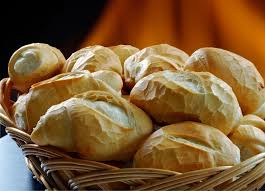
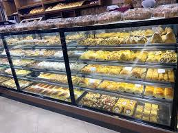
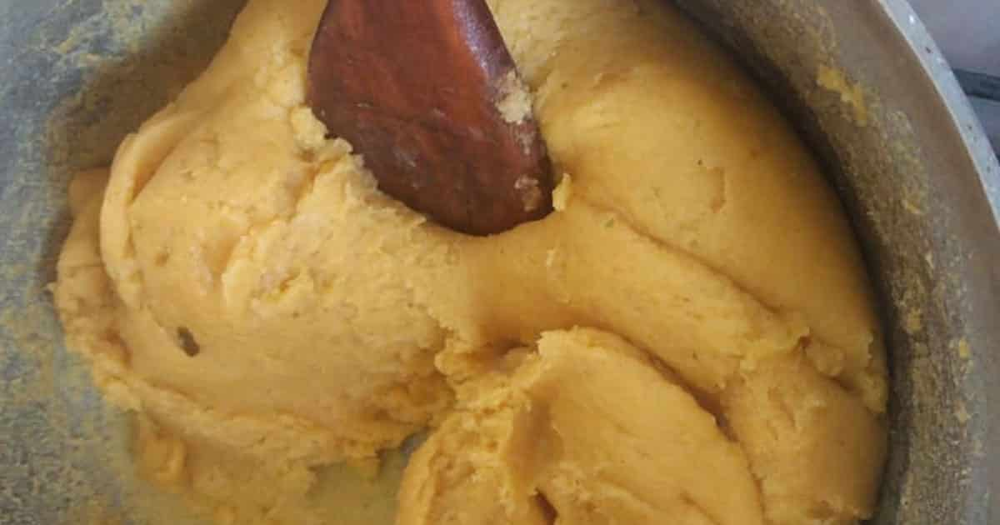
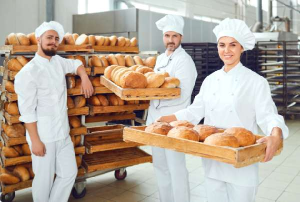

Sobre nós
A Padaria do Bairro é mais do que um lugar para comprar pão.
É um pedacinho da vizinhança feito de sabor, carinho e tradição.
Fundada com o objetivo de trazer produtos fresquinhos todos os dias,
nossa padaria é reconhecida pelo atendimento acolhedor
e pela qualidade em cada fornada.
Tabela de produtos
| Categoria | Produto | Descrição | Preço |
|---|---|---|---|
| Pães | Pão Francês | É um tipo de pão de tamanho pequeno, no formato cilíndrico. | R$ 0,80 (unid.) |
| Croissant | Salgado francês, caracterizado por sua massa folhada e amanteigada. | R$ 6,00 | |
| Pão de forma integral | Pão integral macio, rico em fibras e sem conservantes. | R$ 6,50 | |
| Doces | Brigadeiro | Doce de chocolate com granulados. | R$ 1,50 (unid.) |
| Bolo de Cenoura | Bolo feito com cenouras coberto por uma cobertura feita de chocolate. | R$ 4,00 (fatia) | |
| Torta de morango | Doce de maça folheada com recheio sabor morango. | R$ 6,00 (fatia) | |
| Croissant de chocolate | Salgado francês de massa folhada com recheio de chocolate. | R$ 6,00 | |
| Salgados | Coxinha | Salgado frito recheado com frango e requeijão. | R$ 5,00 |
| Esfiha | Salgado assado de formato triangular recheado com carne. | R$ 4,50 | |
| Pastel | Salgado frito de formato retangular recheado com carne ou queijo. | R$ 6,00 |
Galeria de imagens

Pão francês.

Ambiente da padaria.

Processo de preparação da coxinha.

Nossa equipe de padeiros.
Evento Festa Junina
Nossos diferenciais
Na Padaria do Bairro, usamos ingredientes selecionados e temos fornadas fresquinhas
ao longo do dia.
Oferecemos produtos artesanais com receitas exclusivas
e atendimento acolhedor que faz você se sentir em casa.
Valorizamos a comunidade local e unimos tradição com inovação para entregar sempre
o melhor sabor.
Vídeo da nossa padaria
Endereço:
-
Rua das Acácias, 274
- Bairro Jardim Esperança
- Ribeirão Preto - SP CEP: 14055-000
Horários:
- Segunda a Sexta: 6h às 19h
- Sábado: 6h às 18h
- Domingo: 7h às 12h